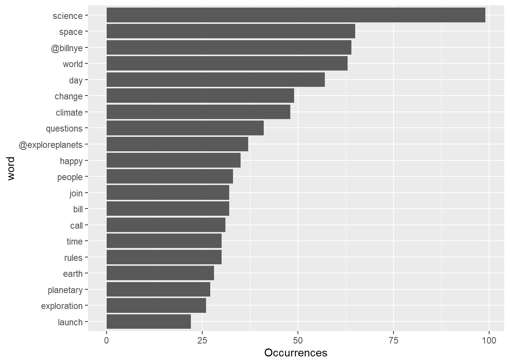
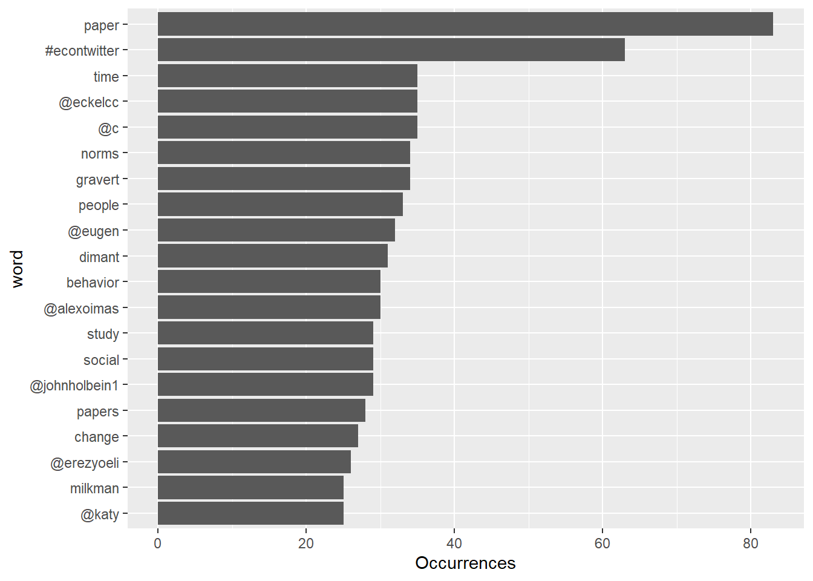

Introduction: Eugen Dimant, a well respected social scientist whose research interest is experimental behavioral economics, with a focus on behavioral ethics, crime, and corruption. Bill Nye, popularly known as Bill Nye the Science Guy, is a mechanical engineer by training and science communicator and television presenter by trade. Our group is curious to know if we can tell them apart by the sentiments expressed in their tweets. Specifically, we predict that Bill Nye is more fun and Eugen Dimant is more serious.
Getting the data ready: We found Eugen Dimant and Bill Nye on Twitter. We extracted their most recent 500 tweets. We only selected the time, content, and course of the tweet and got rid of other irrelevant variables. We created a regular expression pattern for Dimant’s tweets and Nye’s tweets. Out of curiosity, we determined and plotted the most common words used in Dimant and Nye’s tweets. We joined the NRC Sentiment and Emotion Lexicons to Dimant and Nye’s datasets. Then we combined Dimant and Nye’s datasets.
Part A： For Part A, we first split our data into train and test data. Then, we used the train data to develop a Naive Bayes algorithm.
Part B: For Part B, we applied the algorithm on the test data and created a confusion matrix.
Part C: We repeated what we did up until Part B for Dan Ariely and Colin Camerer.
Results: The summary output of the Naive Bayes classifier shows that person 0 expressed sentiments more related to anticipation, disgust, fear, and negativity in their tweets, while person 1 expressed sentiments more related to anger, joy, positivity, and sadness in their tweets. Both people expressed the same level of surprise and trust in their tweets.
Conclusion:
It seems like person 1 is Bill Nye because as a science communicator and television presenter, he needs to show more joy and positivity in his tweets. Considering that Bill Nye’s tweets are meant to target his audience, who are mostly younger people who are interested in the STEM field, it makes sense that the overall sentiment of his tweets are more lighthearted.Then person 0 is Eugen Dimant. This is likely because as an academic, his use of language is much more rigorous compared to Bill Nye, and the sentiment that is reflected by these words may radidate a more serious tone. Furthermore, since Eugen Dimant’s field of research is in social psychology, it is inevitable that controversial social and political issues are the topics of his focus. The sensitive nature makes the discussions surrounding these topics more emotionally charged, which can also add to the overall negative sentiment reflected by Eugene Dimant’s tweets.
According to the confusion matrix in Part B, the accuracy of the model is not that great. The classifier is only correct half of the time.
#The following code is for accessing the Twitter data
twitter_token <- create_token(
app = "516project",
consumer_key = "A0aV8HCimjtABAMHLjKdirJAJ",
consumer_secret = "RJCEvK2AqSbB5YSIrao2JfDxIqf2pEN2vdJ0V5XuHx551ifMaf",
access_token = "373190113-XI056rrTPPToGEjRJ24QszXacgFZBGja11zLVppt",
access_secret = "ppBA9oHoaDHMKAPdzWO0jzGeL0BADbfp6rGKb7nodYtYn")#Finding username
bill = lookup_users("BillNye")
dimant = lookup_users("eugen_dimant")
#get_timelines finds all of a username's tweets from most recent ones to the earlier ones
dimant_tweet = get_timelines(867914691783340032, n = 500)
bill_tweet = get_timelines(37710752, n = 500)
#Only selected the time of tweet, content of the tweet and the course of the tweet and got rid of other irrelevant variables
cleaned_bill <- bill_tweet %>% select(created_at,text,source)
cleaned_dimant <- dimant_tweet %>% select(created_at,text,source)# Create a regex pattern
library(tidytext)
library(dplyr)
library(tidyverse)## -- Attaching packages ------------------------------------------------------ tidyverse 1.3.0 --## v tibble 3.1.0 v purrr 0.3.4
## v tidyr 1.0.3 v stringr 1.4.0
## v readr 1.3.1 v forcats 0.5.1## -- Conflicts --------------------------------------------------------- tidyverse_conflicts() --
## x dplyr::filter() masks stats::filter()
## x purrr::flatten() masks rtweet::flatten()
## x twitteR::id() masks dplyr::id()
## x dplyr::lag() masks stats::lag()
## x purrr::lift() masks caret::lift()
## x twitteR::location() masks dplyr::location()reg <- "([^A-Za-z\\d#@']|'(?![A-Za-z\\d#@]))"
#For bill's tweet
words_bill <- cleaned_bill %>%
filter(!str_detect(text, '^"')) %>%
mutate(text = str_replace_all(text, "https://t.co/[A-Za-z\\d]+|&", "")) %>%
unnest_tokens(word, text, token = "regex", pattern = reg) %>%
filter(!word %in% stop_words$word,
str_detect(word, "[a-z]"))
head(words_bill)## # A tibble: 6 x 3
## created_at source word
## <dttm> <chr> <chr>
## 1 2021-04-23 17:14:43 Twitter for iPhone join
## 2 2021-04-23 17:14:43 Twitter for iPhone conversation
## 3 2021-04-23 17:14:43 Twitter for iPhone bill
## 4 2021-04-23 17:14:43 Twitter for iPhone nye
## 5 2021-04-23 17:14:43 Twitter for iPhone april
## 6 2021-04-23 17:14:43 Twitter for iPhone learn# For Dimant's tweets
words_dimant <- cleaned_dimant %>%
filter(!str_detect(text, '^"')) %>%
mutate(text = str_replace_all(text, "https://t.co/[A-Za-z\\d]+|&", "")) %>%
unnest_tokens(word, text, token = "regex", pattern = reg) %>%
filter(!word %in% stop_words$word,
str_detect(word, "[a-z]"))
head(words_dimant)## # A tibble: 6 x 3
## created_at source word
## <dttm> <chr> <chr>
## 1 2021-04-23 15:41:48 Twitter for iPhone @benleo
## 2 2021-04-23 15:41:48 Twitter for iPhone econ
## 3 2021-04-23 14:13:02 Twitter for iPhone reviewing
## 4 2021-04-23 14:13:02 Twitter for iPhone paper
## 5 2021-04-23 14:13:02 Twitter for iPhone discipline
## 6 2021-04-23 14:13:02 Twitter for iPhone motivated(This following section may not be necessary.)
#Plotting the most common words from Bill and Dimant's tweets
#For Bill
words_bill %>% count(word, sort = TRUE) %>% head(20) %>% mutate(word = reorder(word, n)) %>% ggplot(aes(x = word, y = n)) + geom_bar(stat = "identity") + ylab("Occurrences") + coord_flip()
#For Dimant
words_dimant %>% count(word, sort = TRUE) %>% head(20) %>% mutate(word = reorder(word, n)) %>% ggplot(aes(x = word, y = n)) + geom_bar(stat = "identity") + ylab("Occurrences") + coord_flip()
#Joining the NRC lexicon to the dataset
nrc = read_rds("nrc.rds")
#For Bill (showing the top 10 words and their sentiment)
sentiment_bill <-
inner_join(words_bill, nrc, by = "word") %>%
group_by(sentiment) %>%
head(25) %>%
mutate(person = 1)
#For Dimant (showing the top 10 words and their sentiment)
sentiment_dimant <-
inner_join(words_dimant, nrc, by = "word") %>%
group_by(sentiment) %>%
head(25) %>%
mutate(person = 0)
# combining dataset
combined_tweets <- as.data.frame(rbind(sentiment_bill,sentiment_dimant))
combined_tweets## created_at source word sentiment person
## 1 2021-04-23 17:14:43 Twitter for iPhone join positive 1
## 2 2021-04-23 17:14:43 Twitter for iPhone learn positive 1
## 3 2021-04-22 17:45:11 Twitter Web App talk positive 1
## 4 2021-04-22 17:45:11 Twitter Web App change fear 1
## 5 2021-04-22 17:45:11 Twitter Web App vote anger 1
## 6 2021-04-22 17:45:11 Twitter Web App vote anticipation 1
## 7 2021-04-22 17:45:11 Twitter Web App vote joy 1
## 8 2021-04-22 17:45:11 Twitter Web App vote negative 1
## 9 2021-04-22 17:45:11 Twitter Web App vote positive 1
## 10 2021-04-22 17:45:11 Twitter Web App vote sadness 1
## 11 2021-04-22 17:45:11 Twitter Web App vote surprise 1
## 12 2021-04-22 17:45:11 Twitter Web App vote trust 1
## 13 2021-04-22 17:45:11 Twitter Web App vote anger 1
## 14 2021-04-22 17:45:11 Twitter Web App vote anticipation 1
## 15 2021-04-22 17:45:11 Twitter Web App vote joy 1
## 16 2021-04-22 17:45:11 Twitter Web App vote negative 1
## 17 2021-04-22 17:45:11 Twitter Web App vote positive 1
## 18 2021-04-22 17:45:11 Twitter Web App vote sadness 1
## 19 2021-04-22 17:45:11 Twitter Web App vote surprise 1
## 20 2021-04-22 17:45:11 Twitter Web App vote trust 1
## 21 2021-04-22 17:45:11 Twitter Web App account trust 1
## 22 2021-04-22 17:45:11 Twitter Web App clean joy 1
## 23 2021-04-22 17:45:11 Twitter Web App clean positive 1
## 24 2021-04-22 17:45:11 Twitter Web App clean trust 1
## 25 2021-04-22 17:45:11 Twitter Web App electricity positive 1
## 26 2021-04-23 14:13:02 Twitter for iPhone discipline fear 0
## 27 2021-04-23 14:13:02 Twitter for iPhone discipline negative 0
## 28 2021-04-23 14:13:02 Twitter for iPhone feeling anger 0
## 29 2021-04-23 14:13:02 Twitter for iPhone feeling anticipation 0
## 30 2021-04-23 14:13:02 Twitter for iPhone feeling disgust 0
## 31 2021-04-23 14:13:02 Twitter for iPhone feeling fear 0
## 32 2021-04-23 14:13:02 Twitter for iPhone feeling joy 0
## 33 2021-04-23 14:13:02 Twitter for iPhone feeling negative 0
## 34 2021-04-23 14:13:02 Twitter for iPhone feeling positive 0
## 35 2021-04-23 14:13:02 Twitter for iPhone feeling sadness 0
## 36 2021-04-23 14:13:02 Twitter for iPhone feeling surprise 0
## 37 2021-04-23 14:13:02 Twitter for iPhone feeling trust 0
## 38 2021-04-23 14:13:02 Twitter for iPhone weird disgust 0
## 39 2021-04-23 14:13:02 Twitter for iPhone weird negative 0
## 40 2021-04-23 13:24:37 Twitter for iPhone happy anticipation 0
## 41 2021-04-23 13:24:37 Twitter for iPhone happy joy 0
## 42 2021-04-23 13:24:37 Twitter for iPhone happy positive 0
## 43 2021-04-23 13:24:37 Twitter for iPhone happy trust 0
## 44 2021-04-23 13:24:37 Twitter for iPhone score anticipation 0
## 45 2021-04-23 13:24:37 Twitter for iPhone score joy 0
## 46 2021-04-23 13:24:37 Twitter for iPhone score positive 0
## 47 2021-04-23 13:24:37 Twitter for iPhone score surprise 0
## 48 2021-04-23 12:38:28 Twitter for iPhone public anticipation 0
## 49 2021-04-23 12:38:28 Twitter for iPhone public positive 0
## 50 2021-04-23 12:38:28 Twitter for iPhone alive anticipation 0# split data into train and test
set.seed(3451)
data_split <- partition(combined_tweets$person, p = c(train = 0.8, test = 0.2))
train <- combined_tweets[data_split$train, ]
test <- combined_tweets[data_split$test, ]# develop Naive Bayes algorithm
nb_default <-naiveBayes(as.factor(person)~ sentiment, data = train)
nb_default##
## Naive Bayes Classifier for Discrete Predictors
##
## Call:
## naiveBayes.default(x = X, y = Y, laplace = laplace)
##
## A-priori probabilities:
## Y
## 0 1
## 0.5 0.5
##
## Conditional probabilities:
## sentiment
## Y anger anticipation disgust fear joy negative positive sadness surprise trust
## 0 0.00 0.15 0.10 0.10 0.10 0.15 0.15 0.05 0.10 0.10
## 1 0.10 0.05 0.00 0.00 0.10 0.10 0.35 0.05 0.10 0.15default_pred <- predict(nb_default, test, type="class")
confusionMatrix(default_pred, as.factor(test$person))## Confusion Matrix and Statistics
##
## Reference
## Prediction 0 1
## 0 3 4
## 1 2 1
##
## Accuracy : 0.4
## 95% CI : (0.1216, 0.7376)
## No Information Rate : 0.5
## P-Value [Acc > NIR] : 0.8281
##
## Kappa : -0.2
##
## Mcnemar's Test P-Value : 0.6831
##
## Sensitivity : 0.6000
## Specificity : 0.2000
## Pos Pred Value : 0.4286
## Neg Pred Value : 0.3333
## Prevalence : 0.5000
## Detection Rate : 0.3000
## Detection Prevalence : 0.7000
## Balanced Accuracy : 0.4000
##
## 'Positive' Class : 0
##